Digital learning provider — Indonesia
Metrodata Academy — IT training & certification Role: UI/UX Designer Scope: Website, design system, documentation Methods: Research, benchmarking, stakeholder workshops Stack: Web, responsive Screens rebuilt for this portfolio — the original files stayed with the company.
Metrodata Academy
Metrodata Academy is the learning arm of Metrodata Electronics, one of Indonesia’s largest IT distributors. It exists to close the country’s digital skills gap — bootcamps, certified training and career programs that help students and working professionals level up.
I joined as the UI/UX designer responsible for the Academy’s website. The brief sounded simple — put the programs online. The real job was turning a catalogue of trainings, camps, internships and certifications into one clear path, credible enough to stand next to the global certification brands people already trust.
Along the way I built the design system and wrote its documentation, so the designers who came after me could pick the work up without starting over.
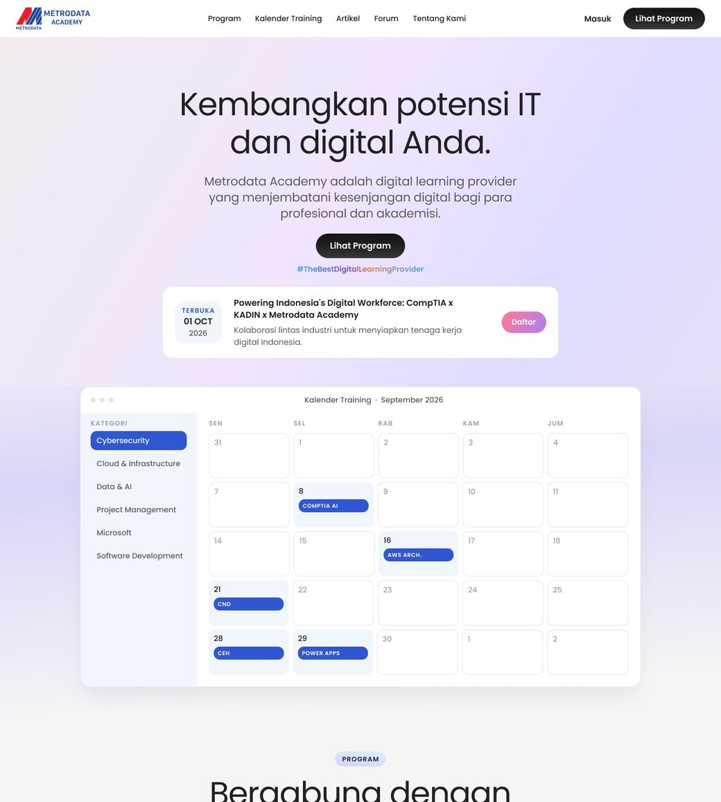
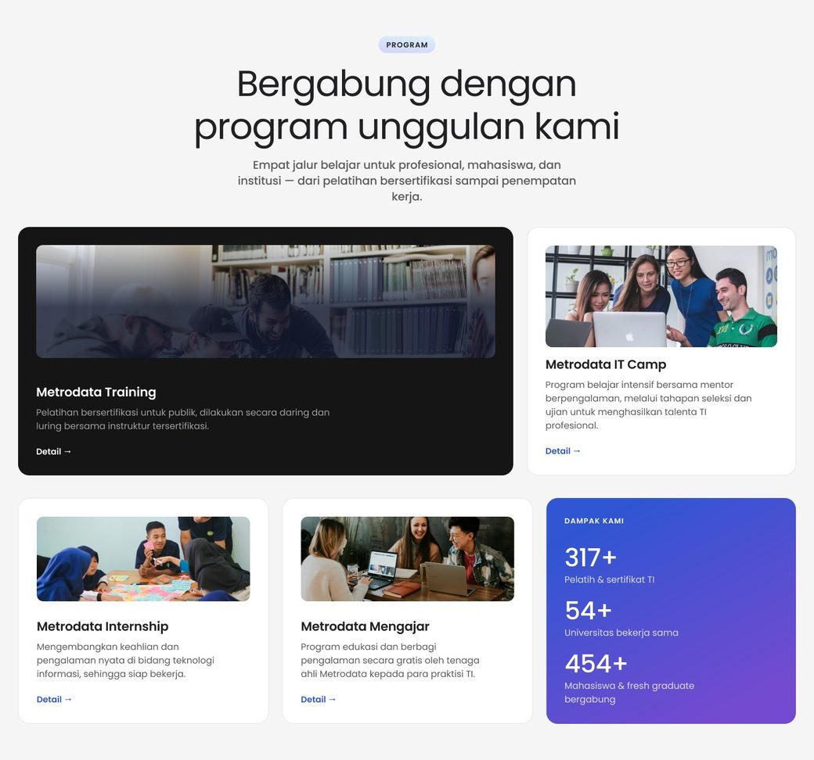
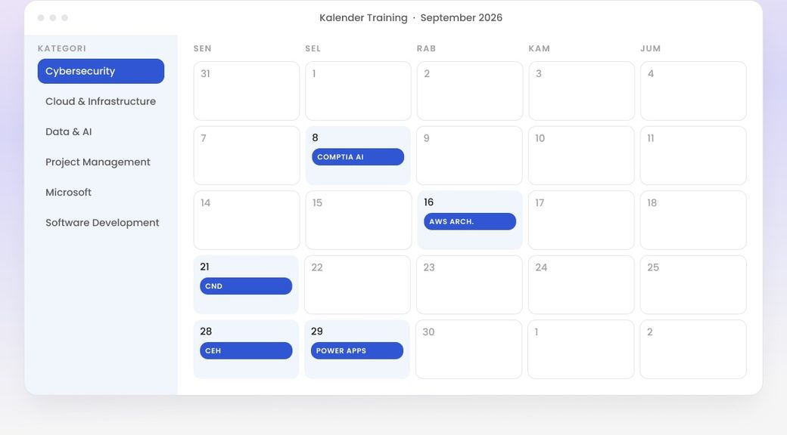
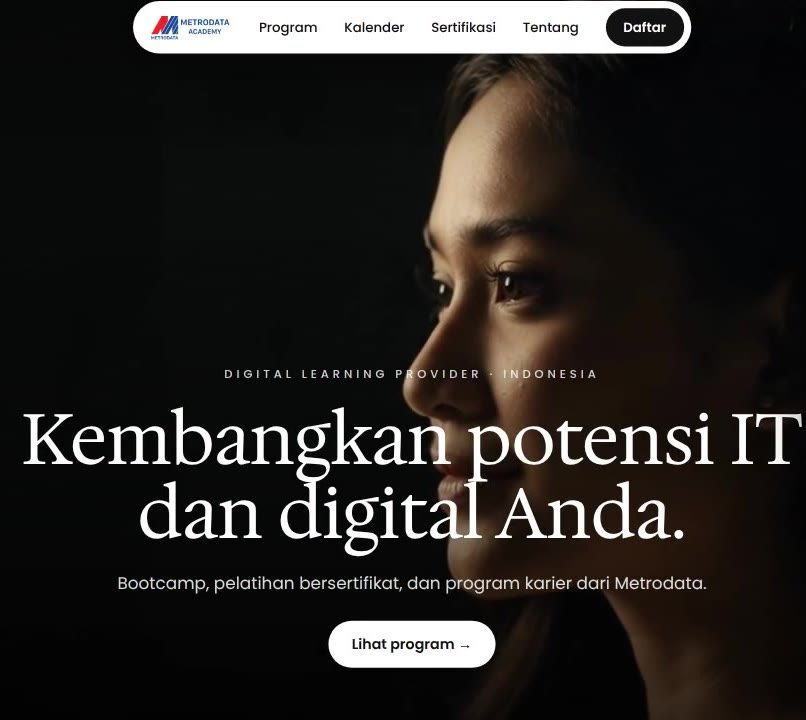
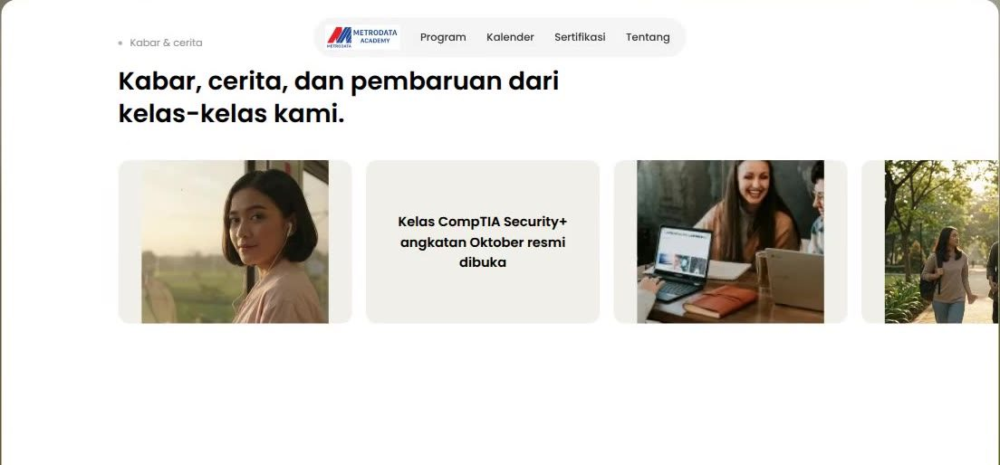
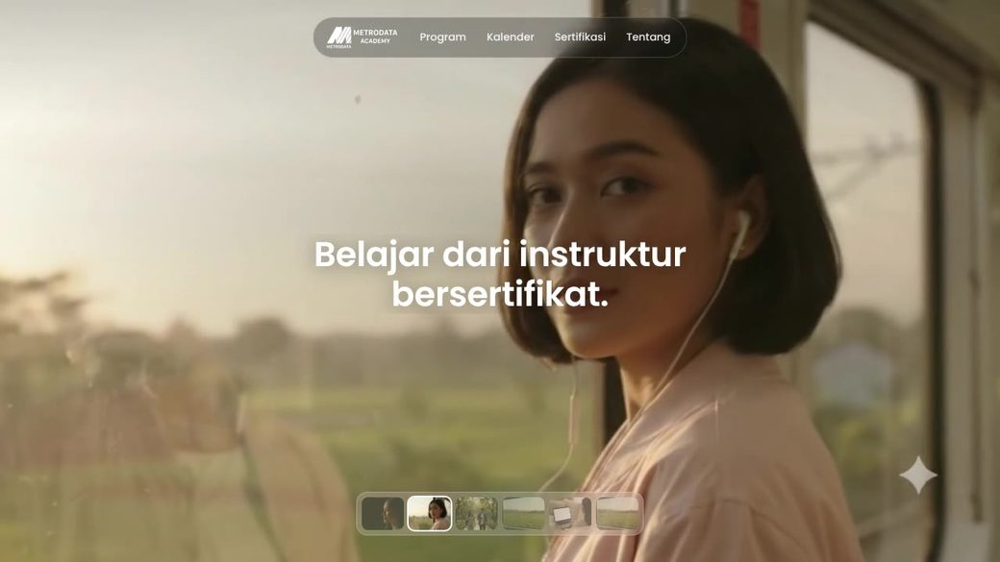
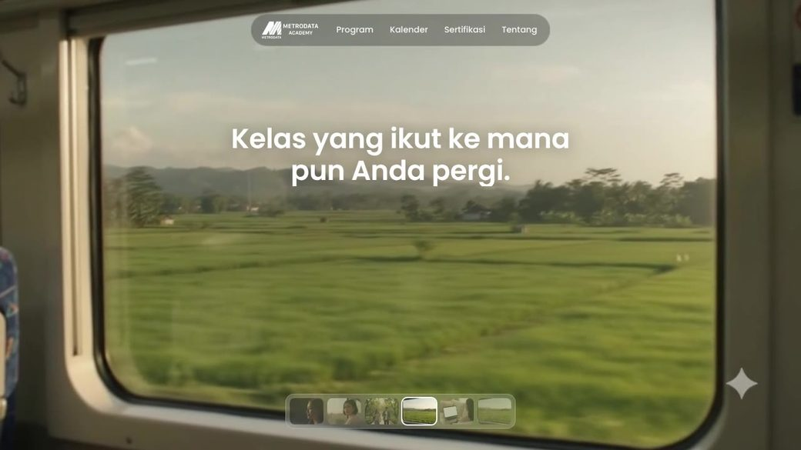
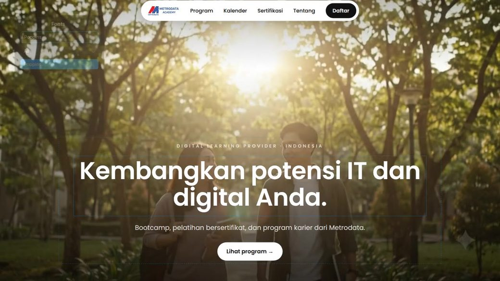
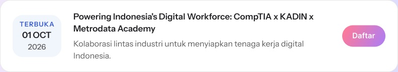
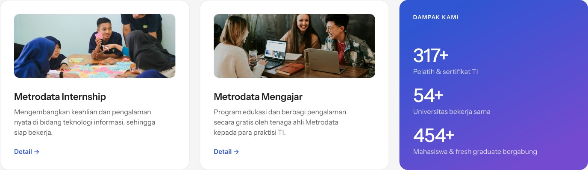
Students & fresh graduates
Internships and IT Camp come with a clear next step — apply, get selected, get placed — so a first career move feels within reach.
Working professionals
A training calendar right under the hero, with certified instructors and online or in-person classes to fit a busy week.
Institutions & HR teams
University partners, training numbers and certification brands up front, so a company or campus can trust the Academy with its people.
Homepage · Programs
Four programs, one clear choice.
Certified training — the Academy’s main line — takes the widest card, so it is the first thing a professional sees.
The impact card sits inside the grid, so the numbers are read in the same glance as the programs.
IT Camp, Internship and Mengajar each say who they are for in one line, with a single Detail link.
Homepage · Training calendar
Plan training around work.
Professionals book around their jobs, so the calendar sits right under the hero instead of at the end of the page.
Categories follow how people search — Cybersecurity, Cloud, Data & AI, Microsoft — not how the catalogue is organised internally.
Each program chip opens its detail and registration, so a date is always one click from signing up.
Colour
Typography
Components
Components / Button
Button
Buttons start an action. Each section gets one primary button for the thing we most want the visitor to do; everything else is secondary or a text link.
Variants
Specs
Height 48 px
Padding 14 × 28 px
Radius Full pill
Label Poppins SemiBold 17
Do
One primary button per section — it is the action we want.
Don’t
Two primary buttons side by side — the visitor has to guess.
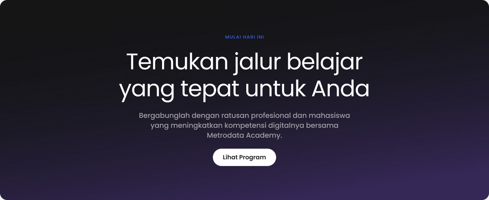
Kept business goals and learner needs in the same conversation, and found a scope everyone could sign off.
Showed decisions as prototypes and stories, not opinions — so approvals came on evidence.
A design system with documentation, so other designers could continue the work.
Audience research and benchmarks behind every section of the homepage.